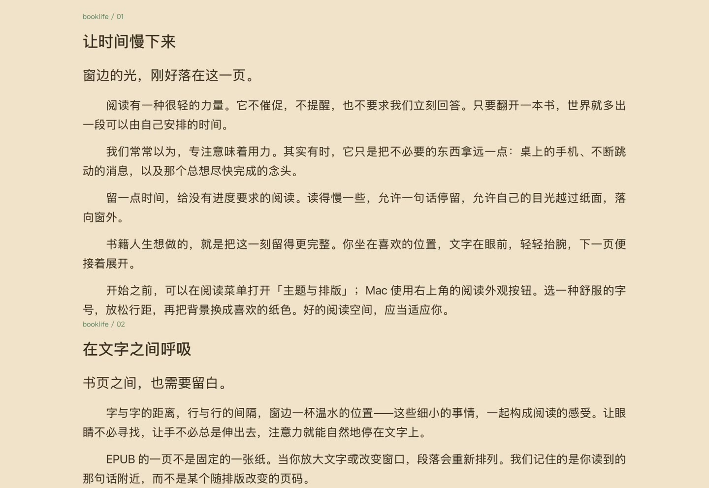
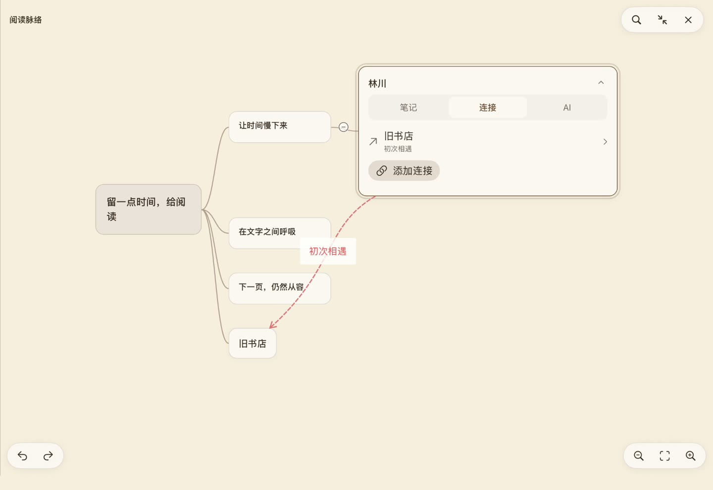

在原文上留一笔
导入自己的 EPUB 或 PDF，选中文字即可高亮、摘录或翻译。手写标记保留原文位置，回看时能找到当时读到的地方。

导入自己的 EPUB 或 PDF，选中文字即可高亮、摘录或翻译。手写标记保留原文位置，回看时能找到当时读到的地方。

在同一张卡片里写笔记、查看连接或向 AI 提问。长按节点，再点「添加」即可创建子节点，把新的想法接在上一条下面。
0.5.0 开发预览。使用配有完整 Xcode 26 或更高版本的 Mac，在终端运行以下命令。打开工程后选择 booklifePhone scheme 和 iPad 模拟器，按 ⌘R 运行。
git clone https://github.com/123bigmirros/booklife.git
cd booklife
open booklife.xcodeproj